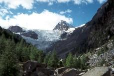
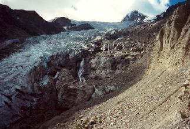
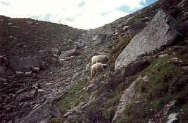
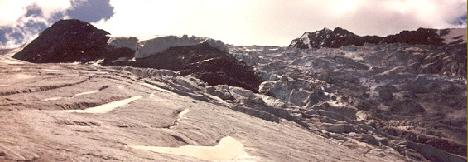

Een lange maar minder zware tocht dan je zou vermoeden als je van Plattja naar de Riedgletscher kijkt. Je kan de wandeling beginnen vanuit Grächen, maar dan doe je er merkelijk langer over (ik vermoed ongeveer 1 uur) omdat je eerst nog naar voorbij Gasenried naar Schalbettu moet, waar je ook met de wagen kan geraken en waar normaal de wandeling begint.
In de zomermaanden (in de winter kan je de hut niet bereiken) is vroeg vertrekken de boodschap. Er is een groot hoogteverschil van 1.200 meter te overbruggen en de hitte in het midden van de dag is dan best te vermijden. Net in een bocht voorbij Schalbettu, begint de klim. Het pad door de bossen is goed en de geur van de dennenbomen aangenaam. Het is nog fris, sommige klimmers hebben nog een

Riedgletscher met Dürrenhorn
warme trui aan. Na ongeveer een uur klimmen dunnen de bomen uit en worden we begroet door de eerste zonnestralen. In de verte bemerken we de Riedgletscher met de Dürrenhorn en we vragen ons af waar we de gletsjer zouden moeten oversteken. Van hier gezien lijkt de gletsjer vol met steile kloven.
De morenewanden van de Riedgletscher zijn stijl en diep, maar gelukkig hoeven we niet bovenop de kam ervan te lopen. Een degelijk pad is beschikbaar aan de westzijde waarlangs, ter hoogte van Alpja nog een eenzame schapenboer zijn hutje heeft. De Bordierhütte zelf blijft lang voor het oog

Grote kloven in de Riedgletscher met morenewand
verborgen. Dit komt omdat het in het midden van een breed plateau ligt en we op dit ogenblik nog niet over de rand van dit plateau kunnen kijken.
Dit verandert zodra we ter hoogte van de oversteekplaats van de gletsjer komen. Een redelijk vlak stuk waarop de oversteekplaats goed met stokken werd aangeduid. De talrijke kloven verhinderen dat je de gletsjer in een rechte lijn kan oversteken, het is dus uitermate belangrijk de

De weg loopt in het midden tussen morene en bergwand.
markeringen goed te volgen maar niemand gebruikt touwen. Het zicht op het bovenliggende gedeelte van de Riedgletscher is hier overweldigend en boezemt ontzag in. De natuur in al z'n pracht en praal.
Route Bordierhütte
Routebeschrijving
Bordierhütte 2.886 m (CH)
Een lange maar minder zware tocht dan je zou vermoeden als je van Plattja naar de Riedgletscher kijkt. Je kan de wandeling beginnen vanuit Grächen, maar dan doe je er merkelijk langer over (ik vermoed ongeveer 1 uur) omdat je eerst nog naar voorbij Gasenried naar Schalbettu moet, waar je ook met de wagen kan geraken en waar normaal de wandeling begint.
In de zomermaanden (in de winter kan je de hut niet bereiken) is vroeg vertrekken de boodschap. Er is een groot hoogteverschil van 1.200 meter te overbruggen en de hitte in het midden van de dag is dan best te vermijden. Net in een bocht voorbij Schalbettu, begint de klim. Het pad door de bossen is goed en de geur van de dennenbomen aangenaam. Het is nog fris, sommige klimmers hebben nog een
Riedgletscher met Dürrenhorn
warme trui aan. Na ongeveer een uur klimmen dunnen de bomen uit en worden we begroet door de eerste zonnestralen. In de verte bemerken we de Riedgletscher met de Dürrenhorn en we vragen ons af waar we de gletsjer zouden moeten oversteken. Van hier gezien lijkt de gletsjer vol met steile kloven.
De morenewanden van de Riedgletscher zijn stijl en diep, maar gelukkig hoeven we niet bovenop de kam ervan te lopen. Een degelijk pad is beschikbaar aan de westzijde waarlangs, ter hoogte van Alpja nog een eenzame schapenboer zijn hutje heeft. De Bordierhütte zelf blijft lang voor het oog
Grote kloven in de Riedgletscher met morenewand
verborgen. Dit komt omdat het in het midden van een breed plateau ligt en we op dit ogenblik nog niet over de rand van dit plateau kunnen kijken.
Dit verandert zodra we ter hoogte van de oversteekplaats van de gletsjer komen. Een redelijk vlak stuk waarop de oversteekplaats goed met stokken werd aangeduid. De talrijke kloven verhinderen dat je de gletsjer in een rechte lijn kan oversteken, het is dus uitermate belangrijk de
De weg loopt in het midden tussen morene en bergwand.
markeringen goed te volgen maar niemand gebruikt touwen. Het zicht op het bovenliggende gedeelte van de Riedgletscher is hier overweldigend en boezemt ontzag in. De natuur in al z'n pracht en praal.

Bovendeel van de Riedgletscher ter hoogte van de oversteekplaats.
Tenslotte volgt er nog een kleine maar lastige klim naar het plateau waar de hut op gelegen is. Het is een beetje kletteren over losliggende stenen, maar ook dat valt allemaal nog best mee. Tenslotte bereiken we de hut en worden we beloond met een wondermooi uitzicht. Ondanks dat de hut in 1979 na een brand opnieuw werd opgebouwd, staan de toiletten voor de dagjestoeristen buiten de hut en waren deze op dat ogenblik niet goed onderhouden wat een uitzonderlijke geuroverlast tot gevolg had. Een plekje uit die windrichting zoeken was dus noodzakelijk.